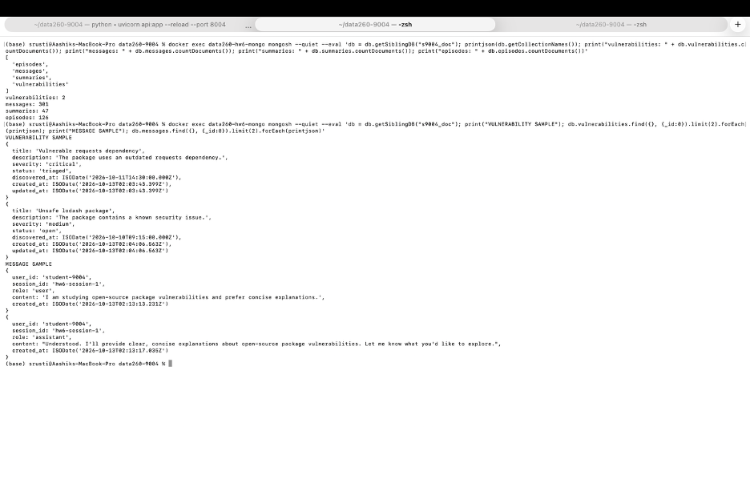
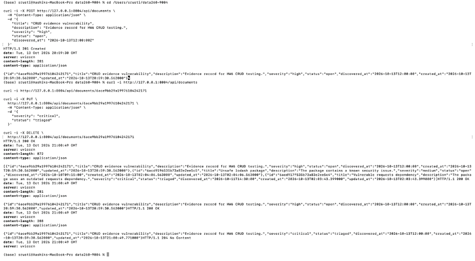
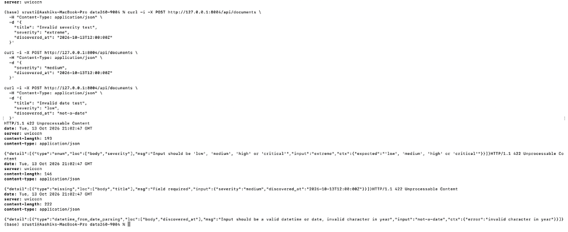
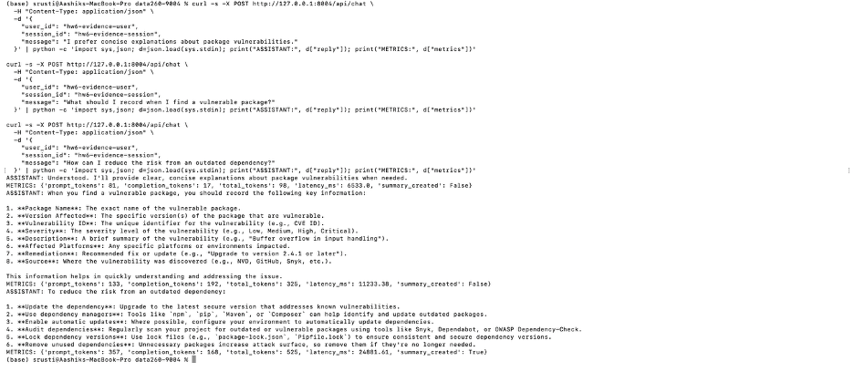
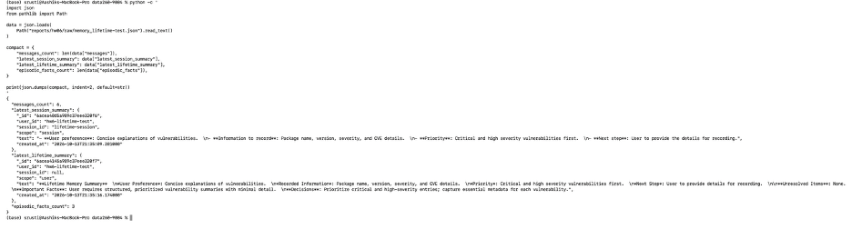
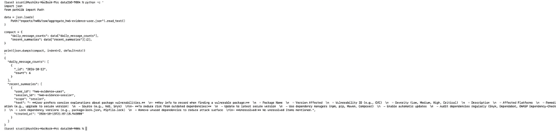
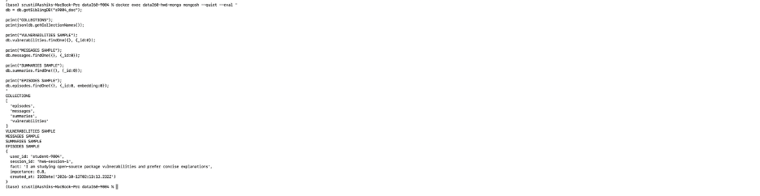
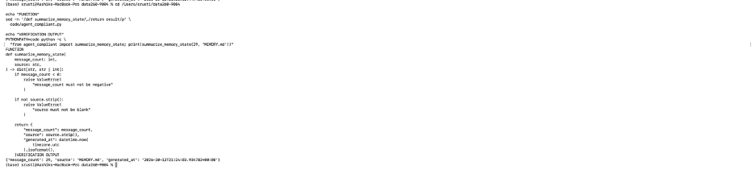

Repository: https://github.com/shrustishetty-2401/data260-9004
A MongoDB database named s9004_doc was created using
MongoDB 7 and PyMongo.
The vulnerabilities collection includes:
Implemented endpoints:
/api/documents/api/documents/api/documents/{id}/api/documents/{id}/api/documents/{id}Validation tests confirmed that invalid severity values, missing titles, and invalid date formats are rejected.
MongoDB collections:
The /api/chat endpoint:
Additional endpoints:
/api/memory/{user_id}/api/aggregate/{user_id}A ten-message conversation was completed successfully. The memory response contained messages, a session summary, episodic facts, embeddings, and MongoDB IDs converted to JSON-safe strings.
| Setting | Mean prompt tokens/turn | Mean latency (ms) | Probe quality |
|---|---|---|---|
| SHORT_TERM_N=4 | 286.97 | 5000.13 | 3.0 |
| SHORT_TERM_N=12 | 614.17 | 9255.64 | 2.8 |
| SHORT_TERM_N=30 | 1020.77 | 12746.58 | 2.8 |
| Eviction policy, N=12 | 685.40 | 10635.50 | 3.0 |
The eviction policy retains only the most recent ten episodic facts per user and removes older facts.
Estimated costs for 10,000 thirty-turn conversations:
| Setting | Mean completion tokens/turn | Estimated cost |
|---|---|---|
| SHORT_TERM_N=4 | 37.93 | $142.99 |
| SHORT_TERM_N=12 | 50.13 | $259.45 |
| SHORT_TERM_N=30 | 44.20 | $372.53 |
| Eviction policy, N=12 | 57.03 | $291.17 |
The best measured setting was SHORT_TERM_N=4 because it had the lowest prompt-token usage, latency, and estimated cost while maintaining a probe score of 3.0.
The worst measured setting was SHORT_TERM_N=30 because it had the highest prompt-token usage, latency, and estimated cost, with a probe score of 2.8.
The eviction policy did not reduce cost in this single run compared with baseline N=12. Its purpose was to demonstrate bounded episodic-memory growth.
AGENT.md contains instructions covering:
MEMORY.md was initially created with 55 lines, including
duplicate and contradictory facts. The /compact command
reduced it to 29 non-empty facts and recorded three contradictions for
review.
Implemented commands:
/memory/compact/dream/helpA type-hinted function using UTC timestamps was implemented and verified against the AGENT.md instructions.
The HW6 smoke test passed:
See AI_USE.md.
raw/chat_metrics.jsonlraw/experiment_short_term_4.jsonraw/experiment_short_term_12.jsonraw/experiment_short_term_30.jsonraw/experiment_eviction_12.jsonraw/memory_student-9004.jsonraw/aggregate_student-9004.jsonmemory_probes.yamlverification.json
| Criterion | MongoDB-backed memory | File-based memory |
|---|---|---|
| Inspectability | Queryable collections with structured fields, timestamps, embeddings, and summaries. | Directly readable Markdown files, making facts and instructions easy to inspect. |
| Persistence after restart | Persists in MongoDB and remains available after the API restarts. | Persists directly in AGENT.md and
MEMORY.md. |
| Scalability across sessions | Better for many users and sessions because records are indexed and queryable. | Less scalable because one Markdown file can become large and difficult to manage. |
| Facts that must not be forgotten | Lifetime summaries and episodic facts provide structured persistence. | Best for durable instructions and manually verified facts that should always be included. |
MongoDB memory is better for conversational history, retrieval, and many sessions. File-based memory is better for stable instructions, verified preferences, and facts that should remain visible and inspectable.
I used an AI assistant to help plan the HW6 implementation, create FastAPI and PyMongo code, design memory retrieval and summarization logic, prepare experiment scripts, and organize the report.
One unsuitable result was the initial memory endpoint response,
which failed because MongoDB ObjectId values were not JSON
serializable.
I detected the problem by calling
GET /api/memory/student-9004 and checking the FastAPI
traceback. The error identified the ObjectId serialization
issue.
I added a recursive make_json_safe function that
converts ObjectId values to strings before returning API
responses. I then recompiled the code and verified that both the memory
and aggregate endpoints returned valid JSON.






